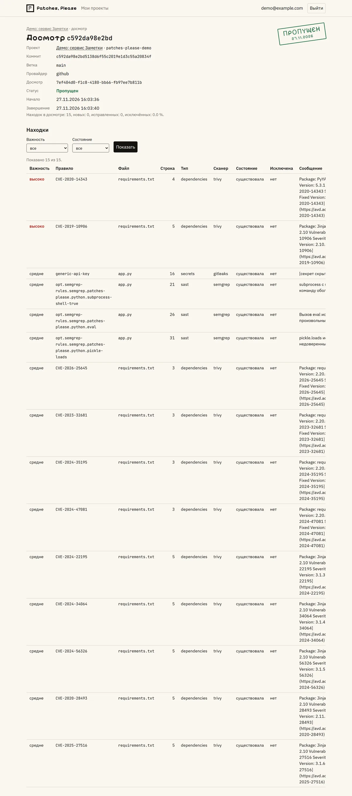
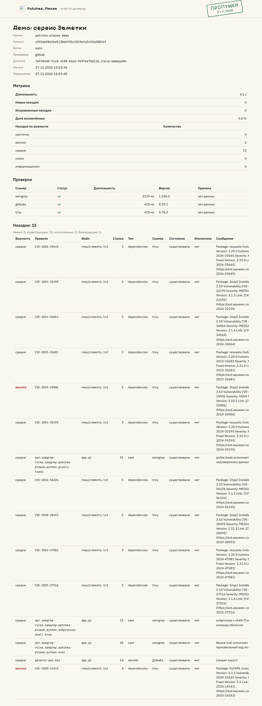

Первый прогон
Прогон запускает проверку коммита: worker клонирует репозиторий, гоняет три сканера и возвращает вердикт. Чтобы дойти до него, нужны учётная запись, проект и токен проекта, а затем вызов клиента с ожиданием результата.
Пользователь, проект и токен
Регистрации нет. Учётную запись, проект и токен создаёт
scripts/seed_demo.py: он работает с базой напрямую, поэтому
запускается с хоста после миграций. Параметры берутся из окружения:
DEMO_PASSWORD (обязателен, не короче 8 символов) и
DEMO_REPO_URL (обязателен).
export DEMO_PASSWORD='<пароль не короче 8 символов>'
export DEMO_REPO_URL='https://github.com/arslan-ahmetjanov/patches-please-demo.git'
uv run python scripts/seed_demo.pyPowerShell:
$env:DEMO_PASSWORD = "<пароль не короче 8 символов>"
$env:DEMO_REPO_URL = "https://github.com/arslan-ahmetjanov/patches-please-demo.git"
uv run python scripts/seed_demo.pyОжидаемо: код возврата 0 и вывод вида
пользователь создан: demo@example.com
проект создан: patches-please-demo (<uuid>)
токен создан: ci (<uuid>)
демо-стенд готов: пользователь demo@example.com, проект patches-please-demo (<uuid>)
токен проекта (показывается один раз): pp_…
Токен показывается один раз: в базе лежит только SHA-256. Сохраните значение.
Скрипт идемпотентен: повторный запуск находит существующие записи и приводит
их к значениям из окружения. Если действующий токен с именем ci
уже есть, открытое значение не печатается; новый выпускает флаг:
uv run python scripts/seed_demo.py --rotate-token
Другой способ получить токен: метод POST
/api/v1/projects/{project_id}/tokens с cookie-сессией владельца
проекта. Страницы управления токенами в интерфейсе нет.
Вход в интерфейс
Откройте http://localhost:8000/login и войдите с email
demo@example.com и паролем из DEMO_PASSWORD.
Ожидаемо: редирект на /projects, в списке проект
patches-please-demo. Если API_PORT равен
8081, адрес начинается с http://localhost:8081.
Прогон через CLI
Клиент ставится вместе с зависимостями проекта. Передайте токен и запустите прогон по коммиту демо-репозитория:
export PATCHES_PLEASE_TOKEN='pp_…'
uv run patches-please scan \
--provider github \
--commit <полный SHA коммита демо-репозитория> \
--ref main \
--waitЕсли порт API отличается от 8000, укажите адрес явно:
export PATCHES_PLEASE_URL='http://localhost:8081'
--provider обязателен: клиент не угадывает провайдера по
переменным. --commit принимает полный SHA, --ref
задаётся в виде git ref (main, refs/heads/main).
Без --wait клиент только создаёт прогон и выходит с кодом
0; для гейта в пайплайне нужен --wait.
Первый прогон на демо-репозитории ожидаемо завершается кодом 1:
политика по умолчанию блокирует critical и high, а
высокие находки Trivy новые. Это не ошибка настройки.
Коды выхода
| Код | Значение |
|---|---|
0 |
Вердикт pass (или прогон только запущен без --wait) |
1 |
Вердикт fail |
2 |
Ошибка аргументов или адреса: нет провайдера, коммита, ref или токена;
неверные --server, --timeout,
--interval; 3xx; 404 на старте;
4xx от API
|
3 |
401, 403 или 404 при опросе: нет доступа к прогону |
4 |
status=error, завершение без вердикта или неполный ответ сервиса |
5 |
Истёк --timeout в ожидании |
6 |
Сеть, 5xx после повторов или непредвиденная ошибка клиента |
Что смотреть на странице прогона
Страница прогона открывается из проекта: /projects/<slug>/scans/<id>.
На ней штамп вердикта, блок дела и таблица находок.
- Штамп. Вердикт и дата: Пропущен или Задержан.
- Блок дела. Проект, коммит, ветка, провайдер, идентификатор прогона, статус, время начала и завершения.
- Метрики. Сколько находок в прогоне, сколько новых и исправленных, какая доля исключена разрешениями.
-
Таблица находок. Важность, правило, путь, строка,
состояние (
new,existing,fixed) и сканер. Фильтр по важности, сниппет раскрывается в терминальном блоке.

[секрет скрыт].
Прогон на демо-репозитории даёт 15 находок: 3 SAST, 1 секрет и 11 уязвимых
зависимостей. Уровни Semgrep и Gitleaks в отчёте равны medium;
Trivy пишет error для своих critical и
high, нормализатор переводит его в high.
Опись
Опись (baseline) фиксирует текущий шум, чтобы исторические находки не
блокировали разработку. Ставится она только по завершённому прогону со
статусом done. Два флага, взаимоисключающие:
--baseline-latestберёт последний завершённый прогон проекта;--baseline-scan <uuid>берёт указанный прогон.
export DEMO_PASSWORD='<тот же пароль>'
export DEMO_REPO_URL='https://github.com/arslan-ahmetjanov/patches-please-demo.git'
uv run python scripts/seed_demo.py --baseline-latestОпись у проекта одна: повторная установка заменяет набор отпечатков, а не создаёт вторую запись. Находки получают метки:
| Метка | Что значит | Влияет на вердикт |
|---|---|---|
new |
Находки не было в описи | Да, если её уровень блокирующий |
existing |
Находка уже была в описи | Нет |
fixed |
Находка из описи больше не встречается | Нет |
Дальше внесите в демо-репозиторий безопасное изменение, например поправьте
пунктуацию в его README.md, и запустите прогон на новом SHA:
uv run patches-please scan \
--provider github \
--commit <новый SHA> \
--ref main \
--wait
Ожидаемо: код 0 и вердикт pass. Все находки совпали
с описью и получили состояние existing. Если править сам
app.py, отпечаток может измениться: в него входит фрагмент кода,
но не номер строки.
Отчёт по прогону
Кроме страницы, worker пишет два файла в том
reportsdata: <scan_id>.json и
<scan_id>.html. HTML открывается в браузере без сервера.

Разрешения со сроком
Если находка ложная, на странице настроек проекта создаётся разрешение: правило, путь, причина и срок действия в UTC. Пока срок не наступил, находки этого правила по подходящему пути не влияют на вердикт. После срока находка снова считается новой, а действие с разрешением попадает в журнал аудита.
Правило указывается точно как в находке, путь задаётся шаблоном: *
совпадает и с вложенными каталогами. Формы защищены CSRF-токеном, менять
настройки может только владелец проекта.
Итог
На демо-репозитории первый прогон даёт
Задержан и код 1: высокие
находки Trivy новые. После установки описи прогон на новом коммите даёт
Пропущен и код 0.
- Страницы управления токенами в интерфейсе нет: токен выдаёт REST API или сев.
- Отчёты лежат файлами в томе
reportsdata, метода скачивания нет. - Опись ставится скриптом напрямую в базу: отдельного метода REST API нет.
-
Повторный запрос с тем же проектом и коммитом возвращает существующий
прогон, включая
error: перезапуск не создаёт новый прогон, нужен новый коммит.